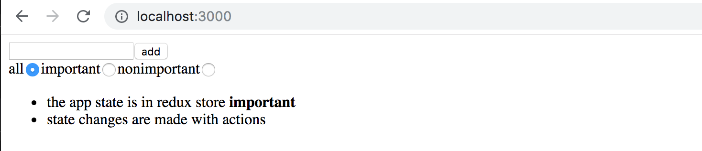
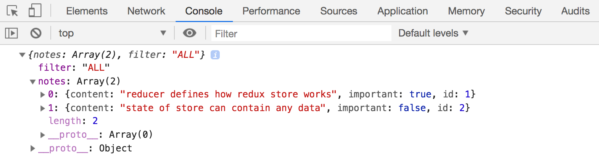
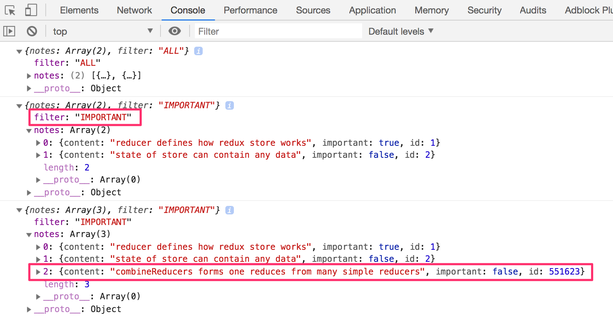
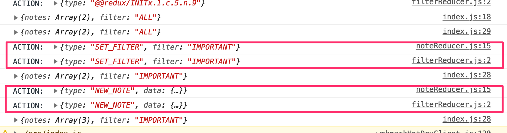
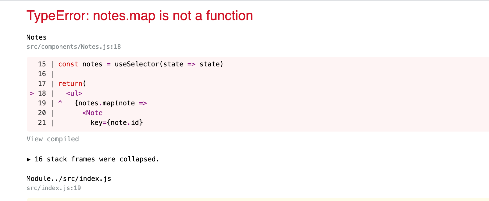
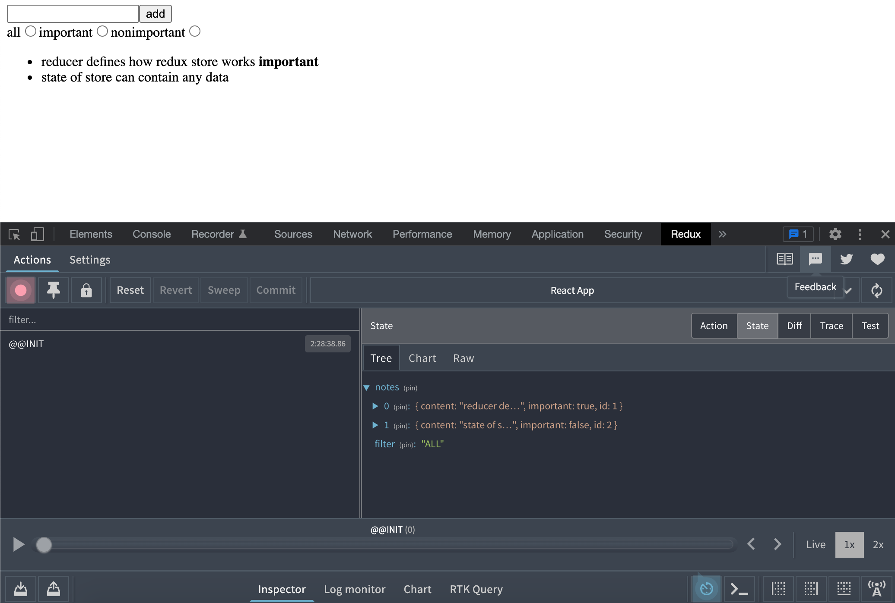
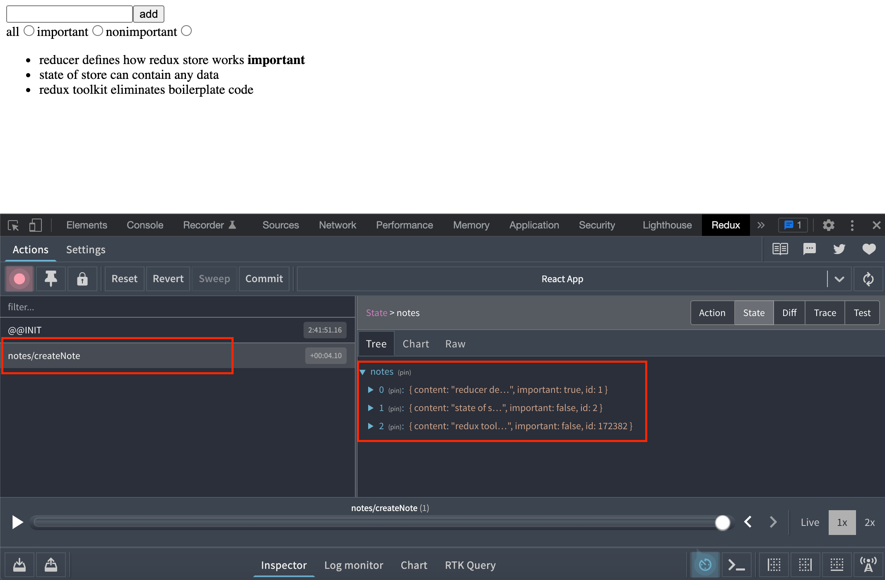
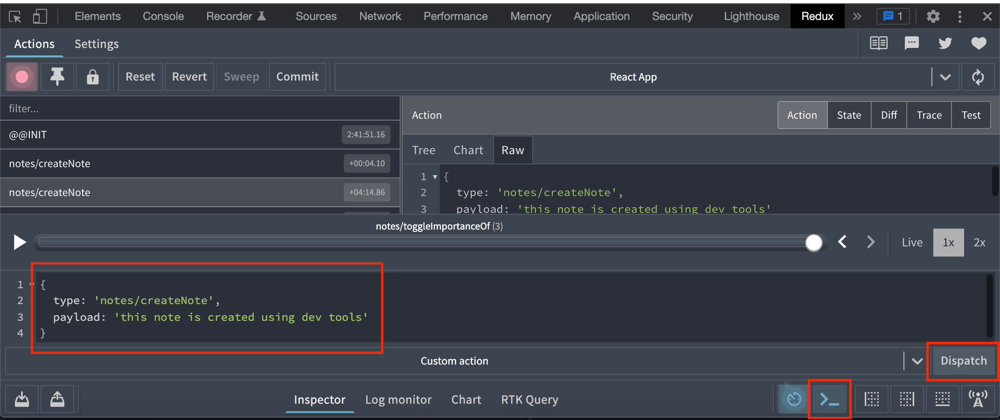

让我们用简化的redux版本来继续我们的笔记应用的工作。
为了简化我们的开发，让我们改变我们的还原器，使存储空间被初始化为一个包含几个笔记的状态。
const initialState = [
{
content: 'reducer defines how redux store works',
important: true,
id: 1,
},
{
content: 'state of store can contain any data',
important: false,
id: 2,
},
]
const noteReducer = (state = initialState, action) => {
// ...
}
// ...
export default noteReducer
Store with complex state
让我们实现对显示给用户的笔记的过滤。过滤器的用户界面将用单选按钮来实现。

让我们从一个非常简单和直接的实现开始。
import NewNote from './components/NewNote'
import Notes from './components/Notes'
const App = () => {
//highlight-start
const filterSelected = (value) => {
console.log(value)
}
//highlight-end
return (
<div>
<NewNote />
//highlight-start
<div>
all <input type="radio" name="filter"
onChange={() => filterSelected('ALL')} />
important <input type="radio" name="filter"
onChange={() => filterSelected('IMPORTANT')} />
nonimportant <input type="radio" name="filter"
onChange={() => filterSelected('NONIMPORTANT')} />
</div>
//highlight-end
<Notes />
</div>
)
}
由于所有的单选按钮的名称属性是相同的，它们形成一个按钮组，其中只有一个选项可以选择。
这些按钮有一个变化处理程序，目前只将与被点击的按钮相关的字符串打印到控制台。
我们决定通过在redux存储中存储过滤器的值来实现过滤器的功能，除了笔记本身之外。在做了这些改变之后，商店的状态应该是这样的。
{
notes: [
{ content: 'reducer defines how redux store works', important: true, id: 1},
{ content: 'state of store can contain any data', important: false, id: 2}
],
filter: 'IMPORTANT'
}
在我们应用的当前实现中，只有笔记数组被存储在状态中。在新的实现中，状态对象有两个属性，notes包含笔记数组，filter包含一个字符串，表示哪些笔记应该被显示给用户。
Combined reducers
我们可以修改我们当前的还原器来处理状态的新形状。然而，在这种情况下，一个更好的解决方案是为过滤器的状态定义一个新的单独的还原器。
const filterReducer = (state = 'ALL', action) => {
switch (action.type) {
case 'SET_FILTER':
return action.filter
default:
return state
}
}
改变过滤器状态的动作如下所示：
{
type: 'SET_FILTER',
filter: 'IMPORTANT'
}
让我们也创建一个新的_action creator_函数。我们将在一个新的src/reducers/filterReducer.js模块中编写动作创建者的代码。
const filterReducer = (state = 'ALL', action) => {
// ...
}
export const filterChange = filter => {
return {
type: 'SET_FILTER',
filter,
}
}
export default filterReducer
我们可以通过使用combinedReducers函数结合两个现有的减速器，为我们的应用创建实际的减速器。
让我们在index.js文件中定义组合减速器。
import React from 'react'
import ReactDOM from 'react-dom/client'
import { createStore, combineReducers } from 'redux' // highlight-line
import { Provider } from 'react-redux'
import App from './App'
import noteReducer from './reducers/noteReducer'
import filterReducer from './reducers/filterReducer' // highlight-line
// highlight-start
const reducer = combineReducers({
notes: noteReducer,
filter: filterReducer
})
// highlight-end
const store = createStore(reducer)
console.log(store.getState())
ReactDOM.createRoot(document.getElementById('root')).render(
/*
<Provider store={store}>
<App />
</Provider>,
*/
<div />
)
由于我们的应用在此时完全中断，我们渲染一个空的div元素而不是App组件。
商店的状态被打印到控制台。

从输出中我们可以看到，商店的形状正是我们想要的!
让我们仔细看看组合减速器是如何创建的。
const reducer = combineReducers({
notes: noteReducer,
filter: filterReducer,
})
上面的还原器所定义的商店的状态是一个有两个属性的对象。notes和filter。notes属性的值由noteReducer定义，它不需要处理状态的其他属性。同样地，filter属性也由filterReducer管理。
在我们对代码做更多修改之前，让我们看看不同的动作是如何改变由组合式还原器定义的存储的状态的。让我们在index.js文件中添加以下内容。
import { createNote } from './reducers/noteReducer'
import { filterChange } from './reducers/filterReducer'
//...
store.subscribe(() => console.log(store.getState()))
store.dispatch(filterChange('IMPORTANT'))
store.dispatch(createNote('combineReducers forms one reducer from many simple reducers'))
通过模拟创建一个笔记，并以这种方式改变过滤器的状态，商店的状态会在每次对商店进行改变后被记录到控制台。

在这一点上，最好能意识到一个微小但重要的细节。如果我们在两个还原器的开头添加一个控制台日志语句，那么。
const filterReducer = (state = 'ALL', action) => {
console.log('ACTION: ', action)
// ...
}
根据控制台的输出，人们可能会得到这样的印象：每个动作都被重复了。

我们的代码中存在一个错误吗？不是的。组合式还原器的工作方式是每个动作都在组合式还原器的每个部分得到处理。通常情况下，只有一个还原器对任何给定的动作感兴趣，但也有这样的情况：多个还原器基于同一个动作改变各自的状态部分。
Finishing the filters
让我们完成应用，使其使用组合式还原器。我们首先改变应用的渲染，并在index.js文件中把商店与应用挂起。
ReactDOM.createRoot(document.getElementById('root')).render(
<Provider store={store}>
<App />
</Provider>,
document.getElementById('root')
)
接下来，让我们修复一个bug，这个bug是由代码期望应用商店是一个笔记数组所引起的。

这是个简单的修正。因为笔记是在商店的字段notes中，我们只需对选择器函数做一点改变。
const Notes = () => {
const dispatch = useDispatch()
const notes = useSelector(state => state.notes) // highlight-line
return(
<ul>
{notes.map(note =>
<Note
key={note.id}
note={note}
handleClick={() =>
dispatch(toggleImportanceOf(note.id))
}
/>
)}
</ul>
)
}
以前的选择器函数返回整个商店的状态。
const notes = useSelector(state => state)
而现在它只返回它的字段notes。
const notes = useSelector(state => state.notes)
让我们把可见性过滤器提取到自己的src/components/VisibilityFilter.js组件中。
import { filterChange } from '../reducers/filterReducer'
import { useDispatch } from 'react-redux'
const VisibilityFilter = (props) => {
const dispatch = useDispatch()
return (
<div>
all
<input
type="radio"
name="filter"
onChange={() => dispatch(filterChange('ALL'))}
/>
important
<input
type="radio"
name="filter"
onChange={() => dispatch(filterChange('IMPORTANT'))}
/>
nonimportant
<input
type="radio"
name="filter"
onChange={() => dispatch(filterChange('NONIMPORTANT'))}
/>
</div>
)
}
export default VisibilityFilter
有了这个新的组件，App就可以简化成如下。
import Notes from './components/Notes'
import NewNote from './components/NewNote'
import VisibilityFilter from './components/VisibilityFilter'
const App = () => {
return (
<div>
<NewNote />
<VisibilityFilter />
<Notes />
</div>
)
}
export default App
实现起来相当简单。点击不同的单选按钮可以改变商店的过滤器属性的状态。
让我们改变Notes组件以纳入过滤器。
const Notes = () => {
const dispatch = useDispatch()
// highlight-start
const notes = useSelector(state => {
if ( state.filter === 'ALL' ) {
return state.notes
}
return state.filter === 'IMPORTANT'
? state.notes.filter(note => note.important)
: state.notes.filter(note => !note.important)
})
// highlight-end
return(
<ul>
{notes.map(note =>
<Note
key={note.id}
note={note}
handleClick={() =>
dispatch(toggleImportanceOf(note.id))
}
/>
)}
</ul>
)
我们只对选择器函数做了修改，它以前是
useSelector(state => state.notes)
让我们简化选择器，从它收到的状态中解构字段作为一个参数。
const notes = useSelector(({ filter, notes }) => {
if ( filter === 'ALL' ) {
return notes
}
return filter === 'IMPORTANT'
? notes.filter(note => note.important)
: notes.filter(note => !note.important)
})
在我们的应用中存在一个轻微的外观缺陷。即使过滤器被默认设置为ALL，相关的单选按钮也没有被选中。自然，这个问题可以被修复，但由于这是一个令人不快但最终无害的错误，我们将把修复工作留到以后。为了缓解这些常见的Redux相关问题
Redux Toolkit
正如我们到目前为止所看到的，Redux's的配置和状态管理实现需要相当多的努力。例如，这体现在减速器和动作创建者的相关代码中，这些代码有一些重复的模板。Redux Toolkit是一个解决这些常见的Redux相关问题的库。例如，该库大大简化了Redux商店的配置，并提供了大量的工具来简化状态管理。
让我们通过重构现有代码开始在我们的应用中使用Redux工具包。首先，我们需要安装该库。
npm install @reduxjs/toolkit
接下来，打开目前创建Redux商店的index.js文件。取代Redux的createStore函数，让我们使用Redux工具包的configureStore函数创建商店。
import React from 'react'
import ReactDOM from 'react-dom/client'
import { Provider } from 'react-redux'
import { configureStore } from '@reduxjs/toolkit' // highlight-line
import App from './App'
import noteReducer from './reducers/noteReducer'
import filterReducer from './reducers/filterReducer'
// highlight-start
const store = configureStore({
reducer: {
notes: noteReducer,
filter: filterReducer
}
})
// highlight-end
console.log(store.getState())
ReactDOM.createRoot(document.getElementById('root')).render(
<Provider store={store}>
<App />
</Provider>,
document.getElementById('root')
)
我们已经摆脱了几行代码，现在我们不需要combineReducers函数来创建商店的还原器。我们很快就会看到，configureStore函数有许多额外的好处，比如毫不费力地集成开发工具和许多常用的库，而不需要额外的配置。
让我们继续重构还原器，这才真正体现了Redux Toolkit的好处。通过Redux Toolkit，我们可以使用createSlice函数轻松创建还原器和相关的动作创建器。我们可以使用createSlice函数来重构reducers/noteReducer.js文件中的reducer和action creators，方法如下。
import { createSlice } from '@reduxjs/toolkit' // highlight-line
const initialState = [
{
content: 'reducer defines how redux store works',
important: true,
id: 1,
},
{
content: 'state of store can contain any data',
important: false,
id: 2,
},
]
const generateId = () =>
Number((Math.random() * 1000000).toFixed(0))
// highlight-start
const noteSlice = createSlice({
name: 'notes',
initialState,
reducers: {
createNote(state, action) {
const content = action.payload
state.push({
content,
important: false,
id: generateId(),
})
},
toggleImportanceOf(state, action) {
const id = action.payload
const noteToChange = state.find(n => n.id === id)
const changedNote = {
...noteToChange,
important: !noteToChange.important
}
return state.map(note =>
note.id !== id ? note : changedNote
)
}
},
})
// highlight-end
createSlice函数的name参数定义了动作类型值中使用的前缀。例如，稍后定义的createNote动作将有notes/createNote类型值。一个好的做法是给参数一个在还原器中唯一的值。这样就不会出现应用的动作类型值之间的意外冲突。initialState参数定义了还原器的初始状态。reducers参数把reducer本身作为一个对象，其中的函数处理由某些动作引起的状态变化。注意，函数中的action.payload包含调用动作创建者提供的参数。
dispatch(createNote('Redux Toolkit is awesome!'))
这个调度调用响应了调度以下对象。
dispatch({ type: 'notes/createNote', payload: 'Redux Toolkit is awesome!' })
如果你密切关注，你可能已经注意到在createNote动作里面，似乎发生了一些违反前面提到的reducers'' immutability原则的事情。
createNote(state, action) {
const content = action.payload
state.push({
content,
important: false,
id: generateId(),
})
}
我们通过调用push方法来改变state参数的数组，而不是返回数组的一个新实例。这到底是怎么回事？
Redux Toolkit利用Immer库与由createSlice函数创建的还原器，这使得在还原器内部改变state参数成为可能。Immer使用改变的状态来产生一个新的、不可变的状态，因此状态的改变仍然是不可变的。请注意，状态可以在不 "改变 "的情况下被改变，就像我们在toggleImportanceOf动作中做的那样。在这种情况下，函数会返回新的状态。然而，改变状态经常会派上用场，特别是当一个复杂的状态需要被更新时。
createSlice函数返回一个对象，包含还原器以及由reducers参数定义的动作创建者。可以通过noteSlice.reducer属性访问还原器，而通过noteSlice.actions属性访问动作创建者。我们可以通过以下方式产生文件''的输出。
const noteSlice = createSlice(/* ... */)
// highlight-start
export const { createNote, toggleImportanceOf } = noteSlice.actions
export default noteSlice.reducer
// highlight-end
其他文件中的导入将像以前一样工作。
import noteReducer, { createNote, toggleImportanceOf } from './reducers/noteReducer'
由于ReduxToolkit的命名惯例，我们需要改变一下测试。
import noteReducer from './noteReducer'
import deepFreeze from 'deep-freeze'
describe('noteReducer', () => {
test('returns new state with action notes/createNote', () => {
const state = []
const action = {
type: 'notes/createNote', // highlight-line
payload: 'the app state is in redux store', // highlight-line
}
deepFreeze(state)
const newState = noteReducer(state, action)
expect(newState).toHaveLength(1)
expect(newState.map(s => s.content)).toContainEqual(action.payload) // highlight-line
})
test('returns new state with action notes/toggleImportanceOf', () => {
const state = [
{
content: 'the app state is in redux store',
important: true,
id: 1
},
{
content: 'state changes are made with actions',
important: false,
id: 2
}]
const action = {
type: 'notes/toggleImportanceOf', // highlight-line
payload: 2 // highlight-line
}
deepFreeze(state)
const newState = noteReducer(state, action)
expect(newState).toHaveLength(2)
expect(newState).toContainEqual(state[0])
expect(newState).toContainEqual({
content: 'state changes are made with actions',
important: true,
id: 2
})
})
})
Redux DevTools
Redux DevTools 是一个Chrome插件，为Redux提供有用的开发工具。例如，它可以用来检查Redux商店的状态，并通过浏览器的控制台调度行动。当使用Redux Toolkit的configureStore函数创建存储时，Redux DevTools不需要额外的配置就可以工作。
一旦插件安装完毕，点击浏览器控制台中的Redux标签就可以打开开发工具。

你可以通过点击某个动作来检查调度某个动作如何改变状态。

也可以使用开发工具向商店调度动作。

你可以在这个Github仓库的part6-2分支中找到我们当前应用的全部代码。